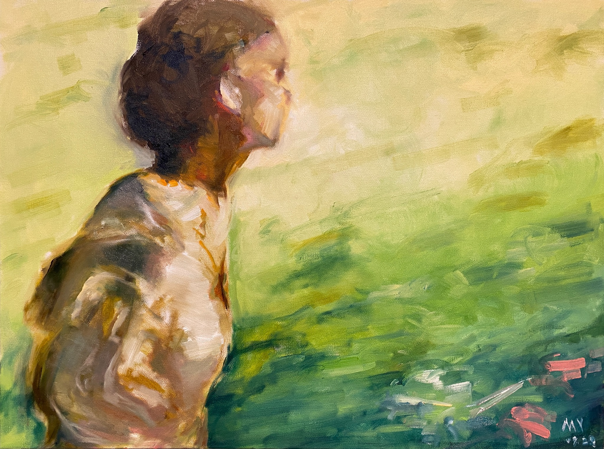
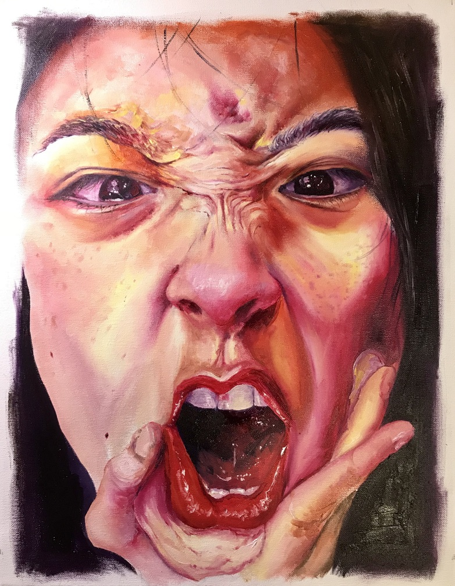
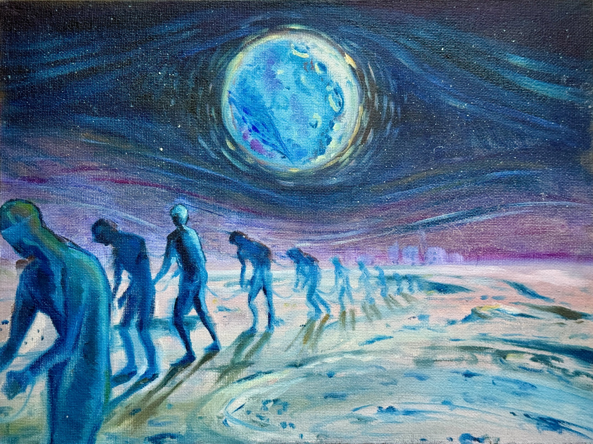
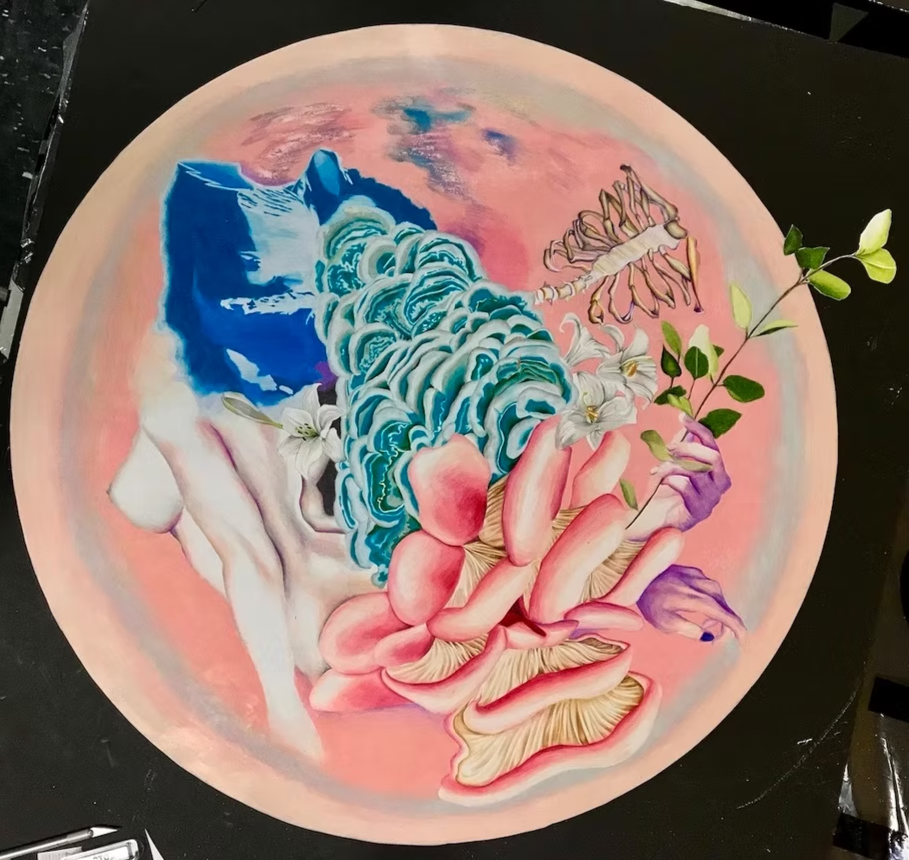
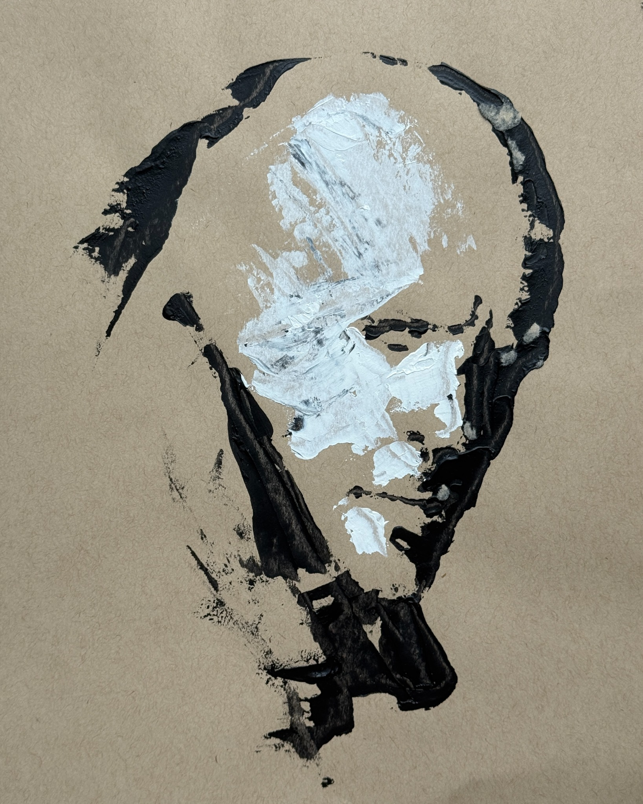

DRAWING & PAINTING













School of Visual Arts Bachelor of Fine Arts
Boston University Master of Arts






Yanfuan Yang is an artist and educator based in Shanghai. She received a Bachelor of Fine Arts from the School of Visual Arts and a Master of Arts in Art Education from Boston University.
Her work explores memory, identity, emotion, and imagined spaces through drawing, painting, and digital media.